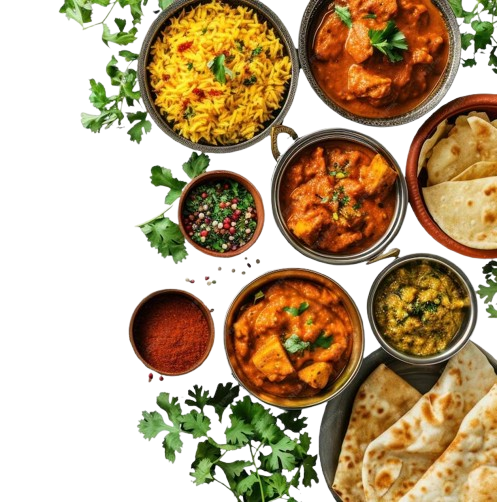

DVine Kitchen

A place to satisfy all your cravings
Welcome to DVine Kitchen — your cozy corner for unforgettable flavors and heartfelt hospitality. From rich local dishes to global favorites, every bite is crafted with love and passion. Whether you're here for a quick coffee or a full-course meal, DVine promises a warm atmosphere, top-tier service, and food that feels just right.
